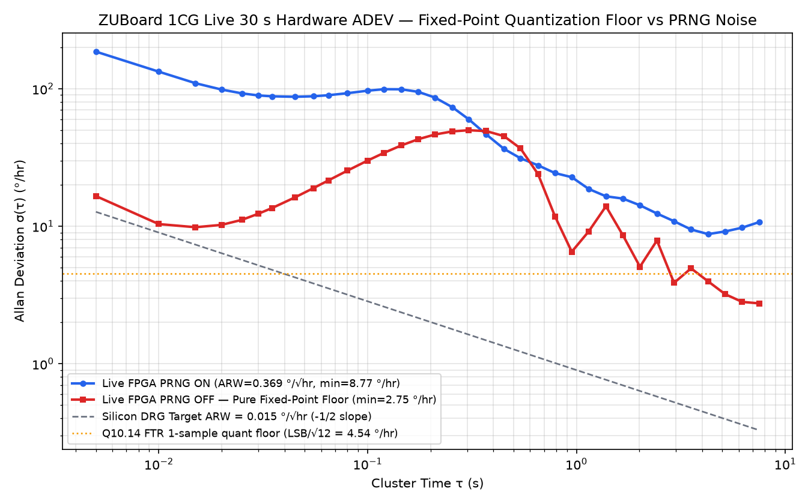

Live XCZU1CG Silicon Verification · Stage 1.5
Does FPGA Fixed-Point Arithmetic Cause Rounding Error?
Measured live on physical ZUBoard 1CG hardware (VERSION = 0x5A550101, 1 MHz HIL physics, GbE UDP + AXI-DMA) across all 3 gyro presets against the 64-bit float64 Python golden model.
TL;DR Short Answer from Real Silicon
Macro Scale Factor (100 °/s)
+0.05% – +0.10%
Negligible error! 48-bit
Q4.44 state @ 1 MHz actually beats 200 kHz float64 (+0.54%).Quadrature Nulling (CLQ)
97.7 – 121.9 dB
Cleanly rejects 10–120 °/s stiffness quadrature across Q=100k to Q=5M.
Where Rounding DOES Bite
15.7 – 22.5 °/hr / LSB
Q10.14 FTRAdj limits noise-free ADEV to ~2.75 °/hr and causes ±1 LSB limit cycles!Live Data 3-Preset FPGA Fixed-Point vs. Float64
| Preset (Live Hardware) | 100 °/s HW Err | Quad Rej | Q2.34 γx LSBs (Err) |
Q2.34 gxy LSBs |
Q10.14 1 LSB |
Zero-Rate RMS (No Noise) |
|---|---|---|---|---|---|---|
| Silicon DRG (11 kHz, Q=100k) | +0.098% | 121.9 dB | 5,937 (0.001%) | 6.00 LSB | 15.7 °/hr | 43.4 °/hr (1 Hz hunt) |
| Micro-HRG (11 kHz, Q=1M) | +0.052% | 107.2 dB | 594 (0.052%) | 0.42 → 0! | 22.5 °/hr | 0.05 °/hr (-25 °/hr static) |
| Space HRG (4.2 kHz, Q=5M) | +0.052% | 97.7 dB | 45.3 (0.74%) | 0.04 → 0! | 22.5 °/hr | 10.3 °/hr (±0.5 LSB sawtooth) |

Left: Noise-free 100 °/s step on live XCZU1CG silicon vs. float64 golden model (notice the FPGA's 1 MHz Strang-split integrator has less overshoot and 10× smaller steady-state error than the 200 kHz Python loop). Right: Zoomed zero-rate residual in °/hr showing exact 1-LSB
Q10.14 quantization steps and the textbook ±0.5 LSB limit cycle on the Q=5M Space HRG.30 s ADEV Pure Fixed-Point Floor vs. On-Chip PRNG Noise
Capturing 30 seconds at 200 Hz (6,000 live DMA frames after discarding a 2.5 s warmup burst) directly separates the FPGA's fixed-point quantization noise floor from the on-chip thermal + RRW noise engine:

Red (PRNG OFF): Pure fixed-point floor bottoms at
2.75 °/hr at τ=7.5 s, with textbook sinc notches at τ=0.95 s, 1.9 s, 2.85 s from a ~1.05 Hz 1-LSB digital PI hunting limit cycle. Blue (PRNG ON): Thermal white noise dithers the limit cycle away smoothly, hitting a bias-instability minimum of 8.77 °/hr at τ=4.3 s before the 52-bit RRW bias walk turns the curve upward!Live 12-Panel Silicon DRG Step Capture (XCZU1CG)

Real-time 12-panel telemetry streamed from ZUBoard 1CG AXI-DMA S2MM over Gigabit Ethernet UDP (
100.0 °/s step, FTR_ss = 100.100 °/s, Feedforward rate tracks instantaneously with 10× smaller transient angle error).Takeaways Exact Bit-Width Bottlenecks & Upgrades
Q4.4448-bit Strang-Split Plant State — ROCK SOLID:1 LSB = 5.7×10-14(−265 dB). Zero noticeable integration drift or energy leak even atQ = 5,000,000.Q10.1424-bit FTR / CLQ Output — #1 BOTTLENECK FOR BIAS STABILITY:1 LSB = 15.7 °/hr(DRG) or22.5 °/hr(HRG). Fine for 100 °/s rate steps (0.05%), but creates a~2.75 °/hrfixed-point ADEV floor and ±1 LSB zero-rate limit cycles when undithered. Upgrade path: widening PI outputs fromQ10.14toQ10.22(32-bit) cuts quantization by 256× to0.06 °/hr/LSB!Q2.34Plant Coefficients at Q ≥ 1M — TINY DAMPING TRUNCATION: For Space HRG (Q = 5M),0.5·γ·dtis45.3 LSBs(0.74%Q rounding error) and0.0005 °/sanisodampingg_xyis0.04 LSBs(truncates to 0). Upgrade path: wideng_xy/gammaregisters toQ2.42(44-bit) for navigation/space-grade HRG fidelity.